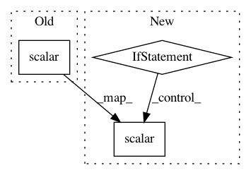

d302168c8c817e5d4f4a59d9f5dfe283a4150cb1,architectures/tensorflow_components/general_network.py,GeneralTensorFlowNetwork,get_model,#GeneralTensorFlowNetwork#Any#,93
Before Change
self.losses = tf.losses.get_losses(self.name)
self.losses += tf.losses.get_regularization_losses(self.name)
self.total_loss = tf.losses.compute_weighted_loss(self.losses, scope=self.name)
tf.summary.scalar("total_loss", self.total_loss)
// Learning rate
if self.tp.learning_rate_decay_rate != 0:
After Change
self.losses = tf.losses.get_losses(self.name)
self.losses += tf.losses.get_regularization_losses(self.name)
self.total_loss = tf.losses.compute_weighted_loss(self.losses, scope=self.name)
if self.tp.visualization.tensorboard:
tf.summary.scalar("total_loss", self.total_loss)
// Learning rate
if self.tp.learning_rate_decay_rate != 0:
self.tp.learning_rate = tf.train.exponential_decay(
self.tp.learning_rate, self.global_step, decay_steps=self.tp.learning_rate_decay_steps,
decay_rate=self.tp.learning_rate_decay_rate, staircase=True)
In pattern: SUPERPATTERN
Frequency: 3
Non-data size: 3
Instances
Project Name: NervanaSystems/coach
Commit Name: d302168c8c817e5d4f4a59d9f5dfe283a4150cb1
Time: 2018-05-24
Author: 30383381+itaicaspi-intel@users.noreply.github.com
File Name: architectures/tensorflow_components/general_network.py
Class Name: GeneralTensorFlowNetwork
Method Name: get_model
Project Name: uber/ludwig
Commit Name: cdab60e331b42dfbb77c143595d337e3e0e279a8
Time: 2020-02-01
Author: piero@uber.com
File Name: ludwig/features/timeseries_feature.py
Class Name: TimeseriesOutputFeature
Method Name: build_output
Project Name: NVIDIA/OpenSeq2Seq
Commit Name: fd5c54dfd76d06569d615634526eb631aab1d05f
Time: 2018-05-02
Author: igor.a.gitman@gmail.com
File Name: open_seq2seq/optimizers/optimizers.py
Class Name:
Method Name: optimize_loss